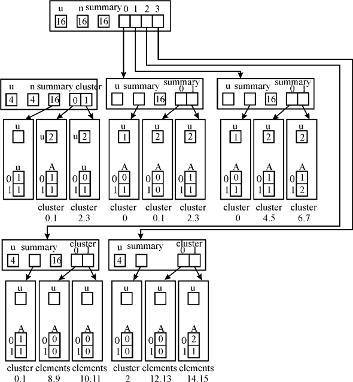
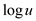
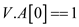
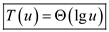

Consider the following pseudo code for PROTO-vEB-MAXIMUM.
PROTO-vEB-MAXIMUM (V)
// check for base condition if it is true then it contain the array A [0...1] of two bit.
1. if V.u==2
// if statement is used to check the element of array first location
2. if V.A[1]==1
//return statement return as a true
3. return 1
//elseif is used to check the value of second location of array
4. else if V.A[0]==1
//return false as a result
5. return 0
// else portion of code will be executed when if statement is false
6. else
// return nil as a result
7. return NIL
8. end if
// if u=2 is false then assign the cluster number to the variable max-cluster
9. else
10. max-cluster= PROTO-vEB-MAXIMUM (V.summary)
//check the value of max-cluster
11. if max-cluster==NIL
//if the value of max-cluster is nil then it return NIL
12. return NIL
13. else
//find the offset within cluster of max element.
14. offset = PROTO-vEB-MAXIMUM (V.cluster [max-cluster])
//finally returns the maximum number from cluster and offset.
15. return index (max-cluster, offset)
Explanation of Algorithm:
• In the above algorithm line first is used to check the base case.
• Find the initial cluster that contain the element of the set and store it into variable max-cluster.
• If there is no element in max-cluster variable then it return null otherwise find the maximum element from the cluster number and offset.
• Finally display the maximum element.
• In the worst case, there are two recursive calls.
The recurrence relation for the above algorithm is as follows:
Substituting u = 2k we get the following:
Renaming the recurrence relation, we get:
Using, master’s theorem, we can find the complexity of the above algorithm to be
Hence, the running time of above algorithm will be .
Consider the following pseudo code for PROTO-vEB-PREDECESSOR.
PROTO-vEB-PREDECESSOR (V, a)
// check for base condition if it is true then it contain the array A [0...1] of two bit.
1. if V.u==2
// if statement is used to check the value of a and element of array first location
2. if a==1 and V.A[0]==1
//return statement return as a false
3. return 0
// else portion of code will be executed when if statement is false
4. else
// return nil as a result
5. return NIL
//if base condition is false then calculates PROTO-vEB-PREDECESSOR
6. else offset = PROTO-vEB-PREDECESSOR (
//if offset has the predecessor
7. if offset != NIL
// return the value of predecessor
8. return index(high (a), offset)
9. else
//assign the other non-empty cluster to Pred-cluster variable
10. Pred-cluster= PROTO-vEB-PREDECESSOR (V.summary, high (a))
11. if Pred-cluster==NIL
// return null value
12. return NIL
13. else
//finally returns the predecessor from cluster and offset.
14. offset = PROTO-vEB-MAXIMUM (
15. return index (Pred-cluster, offset)
Explanation of Algorithm:
• Predecessor of any element a is the largest element in the V that is a.
• In the above algorithm the only way that a can have the predecessor when a==0 and V.A[1]==1.
• In the line 6 of above algorithm, predecessor of a is searched. if it is not NIL, then the predecessor of the element is returned. Otherwise, in the line 10, predecessor cluster for the current cluster is determined.
• If the predecessor cluster is found, then the maximum element in that predecessor cluster is the required predecessor element of a. Thus, it is calculated and returned in the lines 14-15.
The time complexity of PROTO-vEB-PREDECESSOR algorithm is ame as time complexity of PROTO-VEB-SUCCESSOR , that is .
Deleting an element form Proto van Emde Boas structure:
• When an element 0 ≤ x < u is inserted in the Proto van Emde Boas structure, the corresponding index in the corresponding cluster is set to 1 and the summary bit of corresponding cluster is also updated.
• When an element is deleted from the Proto van Emde Boas structure, the corresponding bit in the array of corresponding cluster is set to 0. But, not always the summary bit required to be changed to 0.
• Change the summary bit when an element is deleted in the following case only:
o When an element is deleted, change the corresponding bit in the array as 0. Then check whether there is any 1 bit in the cluster. Generally a cluster contains 0 to u-1 elements.
o If the cluster has at least one bit, then the corresponding summary bit has to be changed. Otherwise, the summary bit can be remained same.
The following is the procedure to delete an element from the Proto van Emde Boas structures:
PROTO-vEB-DELETE (V, x)
1 flag=FALSE
2 if V.u = = 2
3 V.A[x] = 0
4 for k=0 to V.u-1
5 if V.A[k] = = 1
6 flag=TRUE
7 return flag
8 else
9 flag=PROTO-vEB-DELETE( V. cluster [high(x)], low(x))
10 if flag = = FALSE
11 flag=PROTO-vEB-DELETE( V. summary, high(x))
12 return flag
• In line 3, the procedure deletes an element x by updates the corresponding bit in the array A.
• In line 4 to line 6, the procedure checks whether there is any 1 in the cluster.
• The procedure recursively calls to go sub clusters in line 9 until the base case occurs.
• To check whether the summary bit is to be changed or not, the Boolean value flag is used. The procedure updates the summary bit in line 11, if the flag is false (there is no 1’s in the cluster). Otherwise, the procedure skips the line 11.
Worst case time complexity:
In the worst case, occurs when all the clusters has no 1s. Then the procedure has to change all the summary bits for all the corresponding clusters.
In this case, in each iteration PROTO-vEB-DELETE two recursive calls in the lines 9 and 11.
Therefore, the worst case running time for the PROTO-vEB-DELETE is time.
Pseudo code for PROTO-vEB-DELETE structure
The PROTO-vEB is a data structure format used to organize the data in tree structure that will help to dynamically perform the operations on the elements of the tree.
The basic structure of the PROTO-vEB is shown in the diagram
below. The information about the universe size is stored in the
node u. The pointer summary is a pointer to the
proto-vEB( ) structure.
There is an array cluster that has a range of
denotingdifferent
pointers to proto-vEB()
structures.
) structure.
There is an array cluster that has a range of
denotingdifferent
pointers to proto-vEB()
structures.
When the total number of elements has to be counted in the structure, an additional attribute n can be added. The attribute n would be used to count the total number of the elements in the structure for a certain value of u. After this modification is done in the structure, the structure would look like the one below:
In the PROTO-vEB-DELETE operation, not only the required number is deleted but also the addition of the clusters to 1 by the logical OR operation is also modified to include the updated result after deletion of the number x.
Delete operation is not as easy as the insert operation. The reason is that while deleting an element, first it has to be made sure whether or not the element exists in the structure. Only after this the appropriate bit in the summary can be reset to 0.
To do this the scanning of the entire structure might be required. The scan would continue till the concerned element is found in the structure. The count would also help find out if the deletion has taken place successfully.
To make the above happen, the size of the tree has to be determined. This is the place where n comes into the picture. The scan would run until the total scanned elements count crosses n. If this happens that means the element does not exist in the structure and thus cannot be deleted. After the operation if the value of n has decreased by 1 then the operation is successful.
This fact should be taken care of while writing the pseudo code for the DELETE operation.
The pseudo code of the DELETE operation is given below:
PROTO-vEB-DELETE (V,x)
//base case
1. if
2. return 0
3. if
4. return 1
5. call PROTO-vEB-MEMBER
// to find the location of the specified number in the structure.
6.
//copying the attribute n of the specific cluster
7. set
8. count
//check if the count exceeds the limit of elements
9. if then
10. for
//adding up the values of each of the elements of the cluster
11.
12. reset the corresponding value of V.summary too according to the values
of the s of each cluster.
Here at first;
1) Check the base cases where and when the size is 1 after deleting the result is 0, and when the size is 2 after deleting the result returned is 1.
2) Then find the specific position of the number x in the structure from where it has to be deleted in Line 4 by calling PROTO-vEB-MEMBER (V, x).
3) Then copy the attribute n of the structure so as to keep comparing every time a deletion operation occurs with the previous value of the value of n of the cluster.
4) This will help in the logical or of the elements of the cluster, this occurs in Line 5.
5) Then delete the number from the position which is found from the MEMBER operation.
6) Now count the present number of the attribute n in Line 7.
7) Then check if the number decreases meaning the deletion operation has taken place, the logically OR of the elements in that cluster is calculated and the result is updated at every node (Line 8-10).
8) Then there is need to reset the value of the summary array to the logical or of the values of the clusters (Line 11).
In the analysis, the complexity of the MEMBER function
is and that of
the DELETE algorithm is:
and that of
the DELETE algorithm is:
So from the Master’s theorem,
.
Therefore,
And which is greater than 1.
So
Therefore,
However, the inclusion of attribute n helps in deleting the element from the tree. This does not affect any other operation. The reason is that while performing any other operation like Insert, Member and others. The value of n need not be checked.
The result of these operations concludes either true or false. The implication would be straight forward and the reason would be intuitive. So, while performing other operations the attribute n can be simply ignored.
But for enhanced performance of insert operation, n can be considered. After insertion if the value of n is not increased, the insert operation is supposed to have failed. But this is only an optional practice. Since this check would be performed in a constant time so the running time of the procedure would not be altered.
Modifying the proto -vEB structure to support duplicate keys:
The proto-vEB is a recursive data structure that is used to store dynamic data set in a tree structure. operations like INSERT, DELETE, MININUM etc. can be performed on this tree. The basic structure of the PROTO-vEB is shown in the diagram below:
• The information about the size of the universe is stored in the node u.
• The cluster of the tree contains pointers to
proto-vEB()
structures.
• Summary also points to a proto-vEB()
structure.
• Generally the vEB-PROTO structure does not allow to store the duplicate keys.
The proto -vEB structure:
• The proto-vEB structure does not support the duplicate keys.
• Since the structure of the proto-vEB allows the values
between 0 and -1 to
insert. No two same values can be inserted.
• The structure stores only one bit(0 or 1) in the array that specifies the structure contains the number or not.
• That is, the keys are not actually stored in the structure; rather the array indexes are considered to be the value of the key and the corresponding bit is set to 1 at the index. If the key is not present the index is left as 0.
• However, the binary value in the array specifies that whether a single value is present in the structure or not.
Required changes to present data structure to support duplicate keys are as follows:
In order to make the structure support the duplicate keys, change the storage structure such that the slots of array A allows to store integers instead of simple binary value 0 and 1. That is, each slot in the array works as a counter of a value.
INSERTION:
Initially all the indexes would be set to 0. When a key is inserted the value in the corresponding position in the array is incremented by 1. If the same key is inserted, the value in the corresponding array position is incremented to 2.
DELETION:
When a key is deleted, the corresponding value in the array position is decremented by 1. If the counter reaches 0, there is no value that is equal to the array index in the tree.
Adaption to Summary:
Summary bit can be set to 0, if the sum of counters of array in a cluster is zero. Otherwise, the summary bit can be set to 1.
Example:
The following is the proto-vEB structure for the following set of elements (containing duplicate elements) s={2,3,4,5,6,7,7,14,14,15}:

PROTO-vEB structure with satellite data
The PROTO-vEB is a data structure format used to organize the data in tree structure that will help to dynamically perform the operations on the elements of the tree.
The basic structure of the PROTO-vEB is shown in the diagram
below. The information about the universe size is stored in the
node u. The pointer summary is a pointer to the
proto-vEB() structure.
There is an array cluster that has a range of
denoting different
pointers to proto-vEB()
structures.
Satellite Data:
Satellite data, while referenced with respect to the PROTO-vEB structure, is all of the data that is in the node other than the key. This might be a pointer, any integer or other type data.
In general scenarios, any satellite data attached with a key is always kept in the same node as the key. Storing it in the node in the case of an efficient tree structure like PROTO-vEB tree should be done in such a way that the modification does not affect the rest of the structure.
Modification in data structure:
There might be several approaches that can be used to store the satellite data in the vEB tree. The selection of approach depends upon the need in terms of execution time and the space availability.
Below are illustrated a few approaches that can be used to store the satellite data along with the possible advantages and the disadvantages of each if there are any.
Inclusion of pointer:
To modify the vEB tree structure to support satellite data, configure it so that it holds a pointer to the satellite that has to be stored. The pointer can be defined according to the data that is being stored.
An analogy to this approach would be a link list. Every node, in that, has a data and the address field that points to the next node.
To simulate the analogy the node can be changed to be like a collection of nodes. Each node would contain an additional address field that would have the address to the memory location where the satellite data is stored.
This would not make a great impact on the size of the tree and would support the satellite data as well. The operations on the PROTO-vEB structure can be performed by taking the reference of the Keys. This way it could be a good deal to store the satellite data in the VEB tree.The structure would look like the one below:
In the above diagram, the pointer ptr holds the pointer to the satellite data. This can be set to NULL if there is no satellite data available. The advantage of using a pointer would be that it would not take a great amount of space. In case of the node is not storing any satellite data than setting the pointer to NULL would ensure that the space not being consumed needlessly.
Satellite Data in Node itself:
Other way of modification is to save all the data in the structure nodes. This would make the access of the data faster because the data has not to be searched for in various disk locations.
This approach however might be less efficient and more space consuming. The reason is that the entire chunk of data is stored along with the node. This would intuitively be larger than the pointer to any remote disk location.
Moreover, this would make the structure look clumsy and complex. If the satellite is itself complex, the approach would start creating new complexity with the increasing complexities of the satellite data
Ordered pair approach:
One more and probably the most appropriate approach to do this is a minor modification in the first approach. In this entire data is treated as the key value pair.
The keys are the keys stored in the structure itself and the value is the entire satellite data that is associated with the key.
The satellite data would be lying somewhere in the disk in the descending orderand key to this would be stored in the structure. This would make it an ordered pair of keys and associated satellite data.
The keys are stored in the ascending order. Whenever the associated data has to be fetched, it can be gotten by searching the related key in the pair that is stored on the disk. The ascending order of the keys would preserve the basic structure of the vEB tree that has the keys in the ascending order.
The structure of the node in this approach might look like below:
struct satellite
{
int p;
float q;
satellite*pair_ptr;
}
So, the modification in the data structure would allow the data to be stored in the form of the key value pair. Keys would be the data stored in the tree itself and the data would be associated with the keys nonetheless would be stored somewhere else in the memory. The keys would essentially be stored in the ascending order.
A PROTO-vEB structure
The PROTO-vEB is a data structure format used to organize the data in tree structure that will help to dynamically perform the operations on the elements of the tree.
The basic structure of the PROTO-vEB is shown in the diagram
below. The information about the universe size is stored in the
node u. The pointer summary is a pointer to the
proto-vEB() structure.
There is an array cluster that has a range of
denoting different
pointers to proto-vEB()
structures.
While creating the PROTO-vEB structure the following variables have to be taken care of:
1. Universe size: Variable u that is used to store the universe size for the vEB proto structure. This can be maintained using an attribute in the PROTO-vEB structure.
2. Summary: It is already known that summary is a pointer that holds the information about the vEB tree, a variable to hold this information would be required.
3. Cluster: The array that is used to store the values in it in the form of bits. The indexes of the array represent the value and the presence of 0 or 1 represents the presence or absence of the key, respectively.
Pseudo code for PROTO-vEB structure:
While writing the pseudo code the following should be done:
1) Declare and initialize the variable for storing the universe size.
2) Declare and initialize the pointer that would store the summary. For this use an array that would hold the information about the structures.
3) Declare an array that would be used as cluster array. The values that have to be stored in the tree would be first kept in a temporary array and then based on the presence or absence of 1s in the array indexes the values in the cluster array would be filled up.
The pseudo code for the creation of the PROTO-vEB structure can be written as given below:
PROTO-vEB (u)
1. {
// initialize the variable and array index
2. int;
3.
//declare a new array
4.
5. Summary;
//size of the summary array is the number of clusters that is 
//run a loop for array indexes
6. for
//
7. {
8.
//the number of clusters is , and in
each cluster the number of elements is
, and in
each cluster the number of elements is
9. for
10. {
//check the list element
11. if
12. ;
13. else
14. ;
} } }
LIST
1. {
2. Enter the elements in the list [ ].
//Check the elements
3. if
//return 1 if exists
4. return
5. else
//return 0 if does not exist
6. return (0).
}
Explanation of the pseudo code:
First of all, initialize a variable and an array in line 2 and line 3. The array initialized in the line 3 would be used to hold the size of the universe. Declare an array in line 4 that would be used to store the key values in it. Declare another array in line 5 that would be used to store the summary for the given tree.
Lines 6 to 12 are used to store the values in the cluster array.
Line 6 initializes a loop that runs from1 till. Line 8
sets the maximum number of clusters to. Line 9 is
used to check the values that are to be filled in the tree.
To check the values another procedure LIST is to be called. This procedure picks the values from an additional array list that holds the values to be inserted in the tree. If the value in list array is 1 the respective index in the cluster is also set to 1; 0 otherwise.
Now, have a look at the LIST procedure.
This procedure does nothing but enters the values in the cluster array. The concerned key value is passed as the argument. If the value of the variable passed as argument is 1 then the current index of the array list is set to 1. If the value is 0 then the value in the current index of the array is set to 0.
The empty structure of the PROTO-vEB
The PROTO-vEB structure:
The PROTO-vEB is a data structure format used to organize the data in tree structure that will help to dynamically perform the operations on the elements of the tree.
The basic structure of the PROTO-vEB is shown in the diagram
below. The information about the universe size is stored in the
node u. The pointer summary is a pointer to the
proto-vEB() structure.
There is an array cluster that has a range of
denoting different
pointers to proto-vEB()
structures.
The PROTO-vEB MINIMUM gets executed as follows. It gives the minimum number in the list.
PROTO-vEB MINIMUM ( V )
//check the base case
1. if
//check if the first index holds an element
2. if
3. return 0
//check if the second index holds an element
4. else if
5. return 1
//check if the list is empty
6. else
return NIL
7. else
//recursive call to the procedure
min-cluster = PROTO-vEB MINIMUM (V.summary)
//check for NIL list
8. if(min-cluster == NIL)
9. return NIL
10. else
//find out the offset for the list
offset =PROTO-vEB-MINIMUM (V.cluster [min-cluster])
11. return index (min-cluster, offset)
Explanation of the procedure:
In simple words the procedure checks for the first non-zero value in the lists. As the levels get ahead the procedure searches the minimum cluster and finds the first non-zero value in that.
As soon as the value is found, the procedure returns the index of that value. The index is the minimum value in the entire structure.
The procedure gets executed as follows:
Line 1 checks the fundamental case where the universe has only two values.
Line 2 checks if the cluster array has a 1 in its first index and returns the control with a value 0 from line 3.
Line 4 checks the case if the first index has a 1 in it as the value.
Line 5 returns a 1 if case mentioned in the line 4 is true.
If none of these cases is true, the line 6 throws the control out of the procedure with a NIL returned.
The alternative of the line 1 is to call the procedure recursively and store the returned value in the min-cluster that is line 7.
Line 8 checks if the value stored in the min-cluster variable is NIL. If this happens, the procedure returns NIL.
Line 10 and 11 calculate the offset and index for the structure and return the index based on the offset and the min-cluster value.
For NIL structure:
Now have a look at the same procedure for the NIL structure.
Since the structure does not have any element, obviously the structure would not have any range and u cannot be given any value but NIL.
The control gets transfer to the line 7.This is a recursive call to the procedure with the summary pointer passed as argument to the procedure. Since this is a NIL structure that’s why the structure would not have any elements stored in it.
Simply there are no children.
So the procedure would return a NIL. This is stored in the variable min-cluster. Now line 8 is checked to find out if the min-cluster has a NIL. If this is so the next line to be executed would be the line 9. This returns a NIL.
So, it is apparent that the line 9 is executed only if the list is empty. In any other case there would any other value returned than NIL.
PROTO-vEB structure
The PROTO-vEB is a recursive data structure format used to organize the data in tree structure that will help to dynamically perform the operations on the elements of the tree.
The basic structure of the PROTO-vEB is shown in the below
diagram. The information about the universe size is stored in the
node u. The pointer summary is a pointer to the
proto-vEB() structure.
There is an array cluster that has a range of
denoting different
pointers to proto-vEB()
structures.
The following operations can be performed on PROTO-vEB structure:
1. PROTO-vEB-MEMBER: The operation finds if a particular element exists in the structure
2. PROTO-vEB-MINIMUM: The operation finds the minimum element in the structure.
3. PROTO-vEB-MAXIMUM: The operation finds the maximum element in the structure.
4. PROTO-vEB-PREDECESSOR: To find the predecessor of a given value.
5. PROTO-vEB-SUCCESSOR: TO find the successor of the given value.
6. PROTO-vEB-INSERT: To insert a value in the structure.
7. PROTO-vEB-DELETE: To delete the specified element from the structure, if that exists in the structure.
Calculating the complexity for each of the operation performed on PROTO-vEB structure with elements in each cluster is as follows:
PROTO-vEB-MEMBER:
PROTO-vEB-MEMBER procedure calls recursively itself every time in the worst case. Finally it takes to checks membership in constatnt time. Thus, if T(u) is the running time of PROTO-vEB-MEMBER, then the running time can be characterized as follows:
Consider .That is,
So,
Again consider,
Thus, the new recurrence is,
According to the Master’s theorem, case 2, the above recurrence relation has the following solution.
Hence,
PROTO-vEB-MINIMUM ( V ):
In the worst case, the procedure PROTO-vEB-MINIMUM calls itself recursively twice. But the finding the cluster which contains minimum element takes constant time.
Therefore
Consider. That is, and
Thus,
By master’s theorem, case 1,
So, the complexity of PROTO-vEB-MINIMUM operation is
PROTO-vEB-MAXIMUM:
The objective of this operation is to find the maximum element in the PROTO-vEB structure. Thus, like PROTO-vEB-MINIMUM, the PROTO-vEB-MAXIMUM operation also requires time.
Hence
Successor operation finds the next node in the hierarchy with the smallest key that is greater than the current key. The operation makes two recursive calls to itself and calls the procedure to find the minimum as well.
So, the total complexity would be equal to the sum of the complexity of two recursive calls and complexity of minimum.
Consider u=2m and =
By master’s theorem, case 3,

Thus
Hence 
PROTO-vEB-PREDECESSOR:
Predecessor of a node is the node having the greatest value that is less than the current node.
In the worst case, the procedure PROTO-vEB-PREDECESSOR calls itself twice and calls PROTO-vEB-MAXIMUM once. Therefore, the time complexity for PROTO-vEB-PREDECESSOR is same as time complexity of PROTO-vEB-SUCCESSOR .
Hence the complexity of the procedure is .
PROTO-vEB-INSERT :
In the worst case, always the procedure PROTO-vEB-INSERT calls itself twice and takes constant time for updating the summary bit.
So the complexity would be as below:
Consider u=2m and =
By master’s theorem, case 1, the solution to the above recursion is as follows:
Hence
PROTO-vEB-DELETE:
In the worst case, like PROTO-vEB-INSERT, the procedure PROTO-vEB-DELETE recursively calls itself twice and each time it updates the summary bit also in constant time.
Therefore,
Consider u=2m and =
By master’s theorem, case 1, the solution to the above recursion is as follows:
Hence